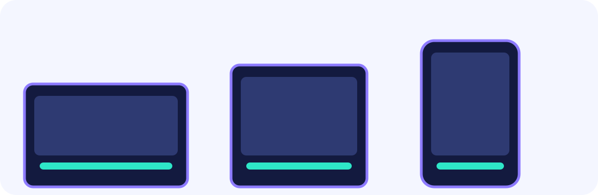
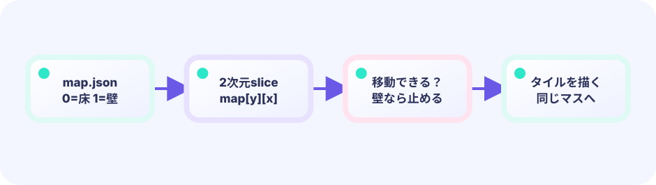
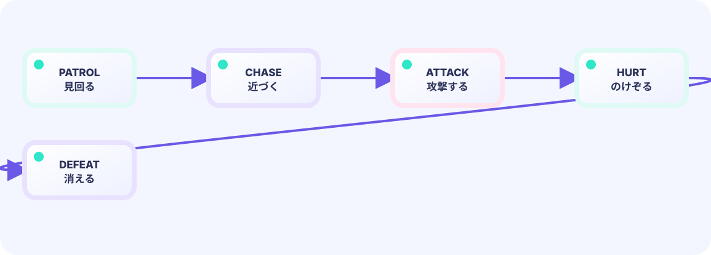

stateフィールド
敵の構造体に state int を持たせます。0 = 巡回、1 = 追跡。たった1つの整数が敵の「気持ち」を表します。
state, timer int★★★★☆ / PLAYABLE
敵はただまっすぐ動くだけでは面白くありません。「普段はランダムに歩き回り、プレイヤーが近づくと追いかける」という状態の切り替えが、生きているような敵AIを生み出します。
見た目はオリジナル主人公の 海老・天次郎。当たり判定は図形のままです。動きの計算は LEVEL 01 の Update / Draw と同じ枠の中に書きます。
はじめて読む人へ
patrol（巡回）は決まった道の見回り、chase（追跡）は天次郎を追う状態。165pxなどは気付く距離を遊びながら調整した値です。
このページの1本
説明と次のコードを対応させてから、ゲームで変化を確かめよう。
if distance < 165 { state = Chase }用語とデータ
ダンジョンという言葉は、部屋や通路が続く探索場所のことです。マップをデータから読むと、同じ移動ルールのまま別の洞窟を増やせます。



PLAYABLE / WEBASSEMBLY
WASD または矢印キーで移動、スペースまたは上タッチで剣攻撃。敵を全て倒すと出口が開きます。ライフが0になるとゲームオーバーです。
DEEP DIVE / ENEMY AI AND STATE TRANSITIONS
答えは、敵の「今の気分」を1つの数字で覚えておく仕組みです——これを状態遷移（じょうたいせんい）と呼びます。敵は常に「今どの状態か」を整数で持っています。状態0は巡回（じゅんかい）＝プレイヤーが遠いときに決まったルートを歩き回ること、状態1は追跡（ついせき）＝プレイヤーが近いときにまっすぐ追いかけることです。プレイヤーとの距離を毎フレーム測り、近ければ状態を1に切り替えます。状態によって動き方のルールを変えるだけで、まるで生きているような敵の動きが生まれます。
敵の構造体に state int を持たせます。0 = 巡回、1 = 追跡。たった1つの整数が敵の「気持ち」を表します。
state, timer int毎フレーム、プレイヤーとの距離を計算します。「見え始める」距離（165ピクセル）より近づいたら追跡モードへ、「遠すぎて見失う」距離（230ピクセル）まで離れたら巡回モードに戻ります。この2つの数字は「どのくらい近づいたら気づくか」を決めるつまみ（調整用の数値）です。
if dist < 165 { e.state = 1 }state == 0（巡回）ではタイマーで向きを変えてランダムに動きます。state == 1（追跡）ではプレイヤーの方向へ一定速度で向かいます。
if e.state == 0 { … } else { … }TRY IT / LAB
プレイヤーとの距離が 120 未満で追跡、それ以外はパトロールです。
本物のゲームの公式を、手でゆっくり回す模型です。
TRY IT · GO
d := math.Hypot(ex-px, ey-py) if d < limit { mode = chase } else { mode = patrol } moveToward(target)
—
THE CHASE DIRECTION
dx, dy := (player.x - enemy.x), (player.y - enemy.y)正規化してvx, vy = dx/dist * speed, dy/dist * speed差ベクトル（dx, dy）の長さで割ることで方向だけを取り出し（正規化）、それにスピードを掛けます。どんな方向でも一定の速さで向かわせることができます。
巡回の vx, vy = -vy, vx は90度回転です。例: 右 (1,0) → (0,1) 下 → (-1,0) 左 → (0,-1) 上、と時計回りに曲がります。Goでは右辺の2つを先に計算してから左の2つへ同時に入れるため、途中で古い vx を失わずXとYを交換できます。
距離が 0（ぴったり重なった）だと割り算で NaN になります。本番では if dist < 1 { dist = 1 } のように下限を入れます。
IN THE REAL GAME
毎フレーム、生きている敵全員について距離を測り、状態を更新し、状態に応じた動きをします。
for i := range g.enemies {
e := &g.enemies[i]
if !e.alive { continue }
dist := math.Hypot((g.player.x+14)-e.x, (g.player.y+14)-e.y)
// 距離で状態を切り替え
if dist < 165 {
e.state = 1 // 追跡モードへ
} else if dist > 230 {
e.state = 0 // 巡回モードへ
}
if e.state == 0 { // 巡回: タイマーで向きを変える
e.timer--
if e.timer <= 0 {
e.vx, e.vy = -e.vy, e.vx // 90度方向転換
e.timer = 100
}
} else { // 追跡: プレイヤーへ向かう
if dist < 1 { dist = 1 } // 0割り防止
e.vx = ((g.player.x+14) - e.x) / dist * 1.35
e.vy = ((g.player.y+14) - e.y) / dist * 1.35
}
}TODAY — まずここを見る
下のコードがこのゲームの本体です（主人公の絵は共有パッケージ internal/hero から読みます）。コピーして手元で開けます。その前に、上の「まずここを見る」3つだけ追ってください。
package main
import (
"fmt"
"image/color"
"math"
"github.com/hajimehoshi/ebiten/v2"
"github.com/hajimehoshi/ebiten/v2/ebitenutil"
"github.com/hajimehoshi/ebiten/v2/inpututil"
"github.com/hajimehoshi/ebiten/v2/vector"
"github.com/kumagi/EbiShowcase/internal/hero"
)
const (
screenWidth = 480
screenHeight = 720
moveSpeed = 3.3
)
type rect struct {
x, y, w, h float64
}
type enemy struct {
x, y float64
vx, vy float64
state int // 0=うろつき, 1=追跡
timer int
alive bool
}
type game struct {
player rect
walls []rect
enemies []enemy
facingX float64
facingY float64
attack int // 攻撃モーションの残りフレーム
life int
cleared bool
gameOver bool
}
func newGame() *game {
g := &game{
player: rect{48, 610, 28, 28},
facingY: -1,
life: 5,
}
g.walls = []rect{
{0, 72, 480, 24},
{0, 696, 480, 24},
{0, 72, 24, 648},
{456, 72, 24, 648},
{110, 170, 260, 24},
{110, 170, 24, 150},
{250, 265, 206, 24},
{345, 265, 24, 165},
{24, 405, 230, 24},
{110, 520, 260, 24},
{235, 405, 24, 115},
}
g.enemies = []enemy{
{180, 115, 0, 0, 0, 90, true},
{405, 220, 0, 0, 0, 30, true},
{70, 350, 0, 0, 0, 150, true},
{400, 470, 0, 0, 0, 60, true},
{175, 600, 0, 0, 0, 120, true},
}
return g
}
func overlap(a, b rect) bool {
return a.x < b.x+b.w && a.x+a.w > b.x && a.y < b.y+b.h && a.y+a.h > b.y
}
func restartPressed() bool {
if inpututil.IsKeyJustPressed(ebiten.KeySpace) {
return true
}
if inpututil.IsMouseButtonJustPressed(ebiten.MouseButtonLeft) {
return true
}
if len(inpututil.AppendJustPressedTouchIDs(nil)) > 0 {
return true
}
return false
}
func overlay(screen *ebiten.Image, msg string) {
vector.DrawFilledRect(screen, 55, 280, 370, 150, color.RGBA{6, 18, 37, 235}, false)
ebitenutil.DebugPrintAt(screen, msg, 145, 330)
}
func (g *game) aliveCount() int {
n := 0
for _, e := range g.enemies {
if e.alive {
n++
}
}
return n
}
func (g *game) movePlayer(dx, dy float64) {
g.player.x += dx
g.player.y += dy
for _, w := range g.walls {
if overlap(g.player, w) {
g.player.x -= dx
g.player.y -= dy
return
}
}
}
func (g *game) moveEnemy(e *enemy, dx, dy float64) {
r := rect{e.x - 13 + dx, e.y - 13 + dy, 26, 26}
for _, w := range g.walls {
if overlap(r, w) {
// 壁に当たったら向きを90度回す
e.vx, e.vy = -e.vy, e.vx
return
}
}
e.x += dx
e.y += dy
}
func (g *game) readMove() (dx, dy float64) {
if ebiten.IsKeyPressed(ebiten.KeyLeft) || ebiten.IsKeyPressed(ebiten.KeyA) {
dx--
}
if ebiten.IsKeyPressed(ebiten.KeyRight) || ebiten.IsKeyPressed(ebiten.KeyD) {
dx++
}
if ebiten.IsKeyPressed(ebiten.KeyUp) || ebiten.IsKeyPressed(ebiten.KeyW) {
dy--
}
if ebiten.IsKeyPressed(ebiten.KeyDown) || ebiten.IsKeyPressed(ebiten.KeyS) {
dy++
}
// 下半分タッチで移動
if ids := ebiten.AppendTouchIDs(nil); len(ids) > 0 {
x, y := ebiten.TouchPosition(ids[0])
if y > screenHeight/2 {
dx = float64(x) - g.player.x - g.player.w/2
dy = float64(y) - g.player.y - g.player.h/2
}
}
if dx != 0 || dy != 0 {
length := math.Hypot(dx, dy)
dx = dx / length * moveSpeed
dy = dy / length * moveSpeed
g.facingX = dx / moveSpeed
g.facingY = dy / moveSpeed
}
return dx, dy
}
// --- ここから Update ---
func (g *game) Update() error {
if g.cleared || g.gameOver {
if restartPressed() {
*g = *newGame()
}
return nil
}
dx, dy := g.readMove()
g.movePlayer(dx, 0)
g.movePlayer(0, dy)
if g.attack > 0 {
g.attack--
}
attackPressed := inpututil.IsKeyJustPressed(ebiten.KeySpace) ||
inpututil.IsKeyJustPressed(ebiten.KeyX) ||
inpututil.IsMouseButtonJustPressed(ebiten.MouseButtonLeft)
for _, id := range inpututil.AppendJustPressedTouchIDs(nil) {
_, y := ebiten.TouchPosition(id)
if y <= screenHeight/2 {
attackPressed = true
}
}
if attackPressed && g.attack == 0 {
g.attack = 18
}
playerCX := g.player.x + 14
playerCY := g.player.y + 14
for i := range g.enemies {
e := &g.enemies[i]
if !e.alive {
continue
}
dist := math.Hypot(playerCX-e.x, playerCY-e.y)
if dist < 165 {
e.state = 1 // 近づいたら追う
} else if dist > 230 {
e.state = 0 // 離れたらうろつく
}
if e.state == 0 {
e.timer--
if e.timer <= 0 {
e.vx, e.vy = -e.vy, e.vx
if e.vx == 0 && e.vy == 0 {
e.vx = 1.1
}
e.timer = 100
}
} else {
if dist < 1 {
dist = 1 // 重なったときの 0 割り（NaN）を防ぐ
}
e.vx = (playerCX - e.x) / dist * 1.35
e.vy = (playerCY - e.y) / dist * 1.35
}
g.moveEnemy(e, e.vx, 0)
g.moveEnemy(e, 0, e.vy)
// 剣の先端に当たったら倒す
swordX := playerCX + g.facingX*30
swordY := playerCY + g.facingY*30
if g.attack > 8 && math.Hypot(swordX-e.x, swordY-e.y) < 35 {
e.alive = false
}
// 接触ダメージ（攻撃中は受けない）
if dist < 22 && g.attack == 0 {
g.life--
g.attack = 55 // のけぞりも兼ねる
if g.life <= 0 {
g.gameOver = true
}
}
}
// 敵を全滅して出口へ
if g.aliveCount() == 0 && g.player.y < 115 && g.player.x > 390 {
g.cleared = true
}
return nil
}
// --- ここから Draw ---
func (g *game) Draw(screen *ebiten.Image) {
screen.Fill(color.RGBA{10, 18, 30, 255})
for y := 96; y < 696; y += 32 {
for x := 24; x < 456; x += 32 {
c := color.RGBA{26, 39, 52, 255}
if (x/32+y/32)%2 == 0 {
c = color.RGBA{30, 44, 58, 255}
}
vector.DrawFilledRect(screen, float32(x), float32(y), 32, 32, c, false)
}
}
for _, w := range g.walls {
vector.DrawFilledRect(screen, float32(w.x), float32(w.y), float32(w.w), float32(w.h), color.RGBA{74, 78, 97, 255}, false)
vector.StrokeRect(screen, float32(w.x+3), float32(w.y+3), float32(w.w-6), float32(w.h-6), 2, color.RGBA{121, 123, 145, 255}, false)
}
exitColor := color.RGBA{115, 45, 61, 255}
if g.aliveCount() == 0 {
exitColor = color.RGBA{53, 210, 153, 255}
}
vector.DrawFilledRect(screen, 397, 76, 55, 36, exitColor, false)
for _, e := range g.enemies {
if !e.alive {
continue
}
c := color.RGBA{178, 86, 221, 255}
if e.state == 1 {
c = color.RGBA{245, 76, 98, 255}
}
vector.DrawFilledCircle(screen, float32(e.x), float32(e.y), 13, c, false)
vector.DrawFilledCircle(screen, float32(e.x-5), float32(e.y-3), 2, color.White, false)
vector.DrawFilledCircle(screen, float32(e.x+5), float32(e.y-3), 2, color.White, false)
}
px := float32(g.player.x + 14)
py := float32(g.player.y + 14)
hero.DrawCentered(screen, float64(px), float64(py), 36)
if g.attack > 8 {
vector.StrokeLine(
screen,
px+float32(g.facingX*18), py+float32(g.facingY*18),
px+float32(g.facingX*48), py+float32(g.facingY*48),
7, color.RGBA{255, 222, 87, 255}, false,
)
}
ebitenutil.DebugPrintAt(screen, fmt.Sprintf("LIFE %d MONSTERS %d", g.life, g.aliveCount()), 18, 24)
ebitenutil.DebugPrintAt(screen, "MOVE: WASD / LOWER TOUCH SWORD: SPACE / UPPER TOUCH", 52, 675)
if g.aliveCount() == 0 {
ebitenutil.DebugPrintAt(screen, "THE EXIT IS OPEN!", 190, 52)
}
if g.cleared {
overlay(screen, "DUNGEON CLEAR!\n\nTAP / SPACE TO RETURN")
} else if g.gameOver {
overlay(screen, "YOU FELL...\n\nTAP / SPACE TO RETRY")
}
}
func (g *game) Layout(_, _ int) (int, int) {
return screenWidth, screenHeight
}
func main() {
ebiten.SetWindowSize(screenWidth, screenHeight)
ebiten.SetWindowTitle("Top-down Dungeon — Ebitengine")
if err := ebiten.RunGame(newGame()); err != nil {
panic(err)
}
}
WITHOUT STATE MACHINE
常にプレイヤーへ向かうだけの敵は、最初から画面端からまっすぐ突進してきます。予測が簡単すぎて面白くありません。
WITH STATE MACHINE
普段はうろうろしていて、近づいたときだけ追ってくる。この「気づき」が緊張感を生み、ゲームにメリハリをつけます。
YOUR FIRST TUNING
追跡開始距離 165 を大きくすると、敵が早めに気づいてプレッシャーが増します。追跡速度 1.35 を上げると敵が速くなります。巡回の方向転換タイマー 100 を変えると動きパターンが変わります。
FEEDBACK